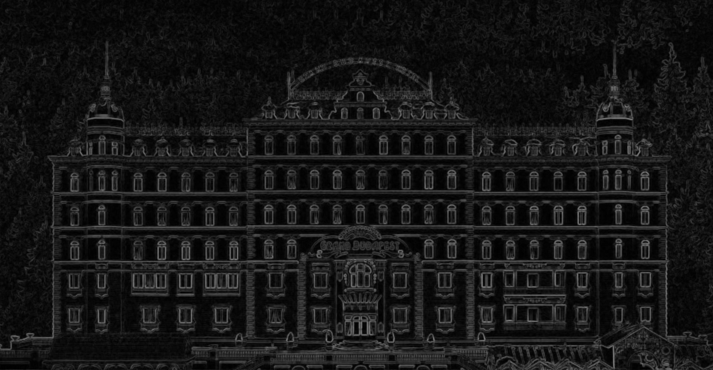
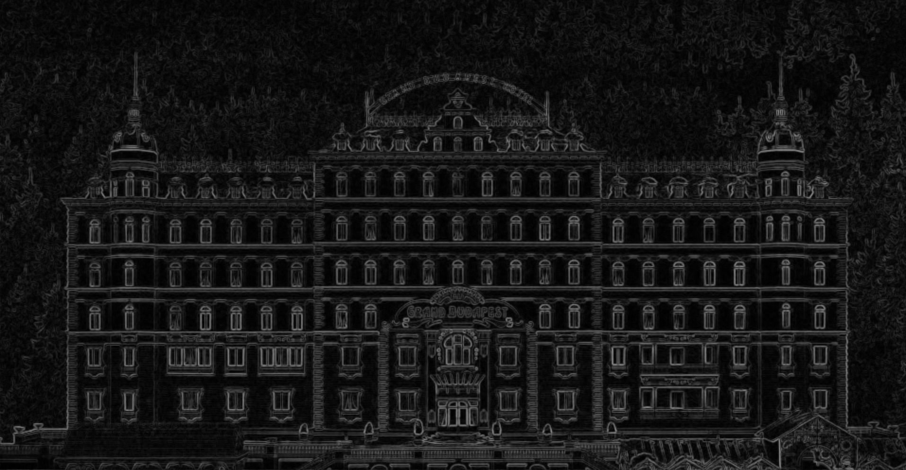
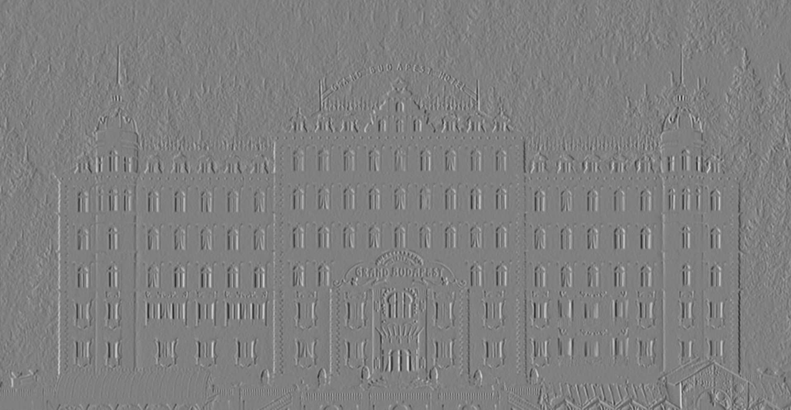
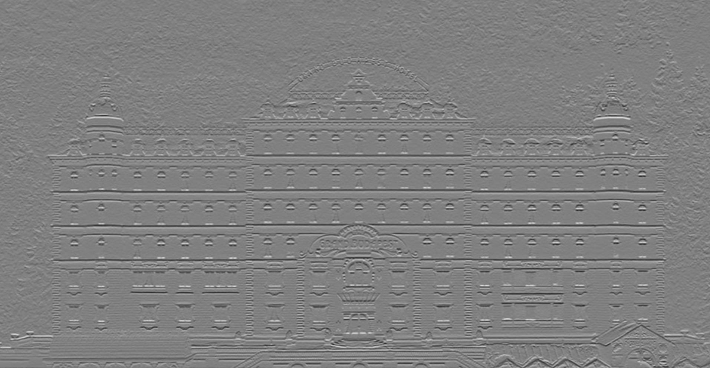

Edge Detection
Edge detection is an image processing technique for finding the boundaries of objects within images and it's implementation is a type of Kernel Convolution. It consists of trying to find the regions where the image has a sharp change in intensity. A high value indicates a steep change and a low value indicates shallow change. A very common way to perform this is by using the Sobel Operator. In this tutorial we will explain the logic behind Detecting Edges in an image.
 

For a more detailed explanation of what Kernel Convolution is, read our Blur Logic tutorial. We highly recommend that you have a look at it before moving forward!
Logic Behind Edge Detection
The basic idea is to approximate the change in light intensity. We do this by comparing the value of pixels on the right side and left side (x-direction kernel), followed by comparing the upper side and lower side (y-direction kernel). We use two 3x3 kernels, one for each x and y direction.
The change in light intensity is the gradient magnitude of the edge, which can be computed by the following formula:
| G | = srt ( (Gx*Gx) + (Gy*Gy) )
Gx = Gradient in x-direction
Gy = Gradient in y-direction
X-Direction Kernel
The X-Direction Kernel will compute the vertically oriented edges. We preserve the center pixels and try to find the difference between the left and right regions. The kernel for x-direction has negative numbers on the left side and positive numbers on the right side.

var srcimg, dstimg;
function preload() {
srcimg = loadImage(imglist.bosch);
}
function setup() {
createCanvas(srcimg.width, srcimg.height);
pixelDensity(1);
dstimg = createImage(srcimg.width, srcimg.height);
}
function draw() {
var k1 = [[-1, 0, 1],
[-2, 0, 2],
[-1, 0, 1]];
var k2 = [[-1, -2, -1],
[0, 0, 0],
[1, 2, 1]];
srcimg.loadPixels();
dstimg.loadPixels();
var w = srcimg.width;
var h = srcimg.height;
for (var x = 0; x < w; x++) {
for (var y = 0; y < h; y++) {
// INDEX POSITION IN PIXEL LIST
var ul = ((x-1+w)%w + w*((y-1+h)%h))*4; // location of the UPPER LEFT
var uc = ((x-0+w)%w + w*((y-1+h)%h))*4; // location of the UPPER MID
var ur = ((x+1+w)%w + w*((y-1+h)%h))*4; // location of the UPPER RIGHT
var ml = ((x-1+w)%w + w*((y+0+h)%h))*4; // location of the LEFT
var mc = ((x-0+w)%w + w*((y+0+h)%h))*4; // location of the CENTER PIXEL
var mr = ((x+1+w)%w + w*((y+0+h)%h))*4; // location of the RIGHT
var ll = ((x-1+w)%w + w*((y+1+h)%h))*4; // location of the LOWER LEFT
var lc = ((x-0+w)%w + w*((y+1+h)%h))*4; // location of the LOWER MID
var lr = ((x+1+w)%w + w*((y+1+h)%h))*4; // location of the LOWER RIGHT
// green channel only
var p0 = srcimg.pixels[ul+1]*k1[0][0]; // upper left
var p1 = srcimg.pixels[uc+1]*k1[0][1]; // upper mid
var p2 = srcimg.pixels[ur+1]*k1[0][2]; // upper right
var p3 = srcimg.pixels[ml+1]*k1[1][0]; // left
var p4 = srcimg.pixels[mc+1]*k1[1][1]; // center pixel
var p5 = srcimg.pixels[mr+1]*k1[1][2]; // right
var p6 = srcimg.pixels[ll+1]*k1[2][0]; // lower left
var p7 = srcimg.pixels[lc+1]*k1[2][1]; // lower mid
var p8 = srcimg.pixels[lr+1]*k1[2][2]; // lower right
var r1 = p0+p1+p2+p3+p4+p5+p6+p7+p8;
var result = map(r1, -1000, 1000, 0, 255);
// write pixels into destination image:
dstimg.pixels[mc] = result;
dstimg.pixels[mc+1] = result;
dstimg.pixels[mc+2] = result;
dstimg.pixels[mc+3] = 255;
}
}
// update and display the pixel buffer
dstimg.updatePixels();
image(dstimg, 0, 0, dstimg.width, dstimg.height);
}
Y-Direction Kernel
The Y-Direction Kernel will compute the horizontally oriented edges. We preserve the center pixels and try to find the difference between the upper and lower regions. The kernel for y-direction has negative numbers at the top and positive numbers at the bottom.

var srcimg, dstimg;
function preload() {
srcimg = loadImage(imglist.bosch);
}
function setup() {
createCanvas(srcimg.width, srcimg.height);
pixelDensity(1);
dstimg = createImage(srcimg.width, srcimg.height);
}
function draw() {
var k1 = [[-1, 0, 1],
[-2, 0, 2],
[-1, 0, 1]];
var k2 = [[-1, -2, -1],
[0, 0, 0],
[1, 2, 1]];
srcimg.loadPixels();
dstimg.loadPixels();
var w = srcimg.width;
var h = srcimg.height;
for (var x = 0; x < w; x++) {
for (var y = 0; y < h; y++) {
// INDEX POSITION IN PIXEL LIST
var ul = ((x-1+w)%w + w*((y-1+h)%h))*4; // location of the UPPER LEFT
var uc = ((x-0+w)%w + w*((y-1+h)%h))*4; // location of the UPPER MID
var ur = ((x+1+w)%w + w*((y-1+h)%h))*4; // location of the UPPER RIGHT
var ml = ((x-1+w)%w + w*((y+0+h)%h))*4; // location of the LEFT
var mc = ((x-0+w)%w + w*((y+0+h)%h))*4; // location of the CENTER PIXEL
var mr = ((x+1+w)%w + w*((y+0+h)%h))*4; // location of the RIGHT
var ll = ((x-1+w)%w + w*((y+1+h)%h))*4; // location of the LOWER LEFT
var lc = ((x-0+w)%w + w*((y+1+h)%h))*4; // location of the LOWER MID
var lr = ((x+1+w)%w + w*((y+1+h)%h))*4; // location of the LOWER RIGHT
// green channel only
var p0 = srcimg.pixels[ul+1]*k2[0][0]; // upper left
var p1 = srcimg.pixels[uc+1]*k2[0][1]; // upper mid
var p2 = srcimg.pixels[ur+1]*k2[0][2]; // upper right
var p3 = srcimg.pixels[ml+1]*k2[1][0]; // left
var p4 = srcimg.pixels[mc+1]*k2[1][1]; // center pixel
var p5 = srcimg.pixels[mr+1]*k2[1][2]; // right
var p6 = srcimg.pixels[ll+1]*k2[2][0]; // lower left
var p7 = srcimg.pixels[lc+1]*k2[2][1]; // lower mid
var p8 = srcimg.pixels[lr+1]*k2[2][2]; // lower right
var r2 = p0+p1+p2+p3+p4+p5+p6+p7+p8;
var result = map(r2, -1000, 1000, 0, 255);
// write pixels into destination image:
dstimg.pixels[mc] = result;
dstimg.pixels[mc+1] = result;
dstimg.pixels[mc+2] = result;
dstimg.pixels[mc+3] = 255;
}
}
// update and display the pixel buffer
dstimg.updatePixels();
image(dstimg, 0, 0, dstimg.width, dstimg.height);
}
Sobel Operator
// convolution kernel example
var srcimg, dstimg;
function preload() {
srcimg = loadImage(imglist.budapest); // Load the image
}
function setup() {
createCanvas(srcimg.width, srcimg.height);
pixelDensity(1);
dstimg = createImage(srcimg.width, srcimg.height);
}
function draw() {
processImage(srcimg, dstimg);
image(dstimg, 0, 0, dstimg.width, dstimg.height);
// noLoop();
}
function processImage(_srcimg, _dstimg, _kernel)
{
_srcimg.filter(GRAY);
var k1 = [[-1, 0, 1],
[-2, 0, 2],
[-1, 0, 1]];
var k2 = [[-1, -2, -1],
[0, 0, 0],
[1, 2, 1]];
_srcimg.loadPixels(); // convert the entire canvas to a pixel buffer
_dstimg.loadPixels(); // convert the entire canvas to a pixel buffer
var w = _srcimg.width;
var h = _srcimg.height;
for (var x = 0; x < w; x++) {
for (var y = 0; y < h; y++) {
// INDEX POSITION IN PIXEL LIST
var ul = ((x-1+w)%w + w*((y-1+h)%h))*4; // location of the UPPER LEFT
var uc = ((x-0+w)%w + w*((y-1+h)%h))*4; // location of the UPPER MID
var ur = ((x+1+w)%w + w*((y-1+h)%h))*4; // location of the UPPER RIGHT
var ml = ((x-1+w)%w + w*((y+0+h)%h))*4; // location of the LEFT
var mc = ((x-0+w)%w + w*((y+0+h)%h))*4; // location of the CENTER PIXEL
var mr = ((x+1+w)%w + w*((y+0+h)%h))*4; // location of the RIGHT
var ll = ((x-1+w)%w + w*((y+1+h)%h))*4; // location of the LOWER LEFT
var lc = ((x-0+w)%w + w*((y+1+h)%h))*4; // location of the LOWER MID
var lr = ((x+1+w)%w + w*((y+1+h)%h))*4; // location of the LOWER RIGHT
// green channel only
var p0 = _srcimg.pixels[ul+1]*k1[0][0]; // upper left
var p1 = _srcimg.pixels[uc+1]*k1[0][1]; // upper mid
var p2 = _srcimg.pixels[ur+1]*k1[0][2]; // upper right
var p3 = _srcimg.pixels[ml+1]*k1[1][0]; // left
var p4 = _srcimg.pixels[mc+1]*k1[1][1]; // center pixel
var p5 = _srcimg.pixels[mr+1]*k1[1][2]; // right
var p6 = _srcimg.pixels[ll+1]*k1[2][0]; // lower left
var p7 = _srcimg.pixels[lc+1]*k1[2][1]; // lower mid
var p8 = _srcimg.pixels[lr+1]*k1[2][2]; // lower right
var r1 = p0+p1+p2+p3+p4+p5+p6+p7+p8;
var p0 = _srcimg.pixels[ul+1]*k2[0][0]; // upper left
var p1 = _srcimg.pixels[uc+1]*k2[0][1]; // upper mid
var p2 = _srcimg.pixels[ur+1]*k2[0][2]; // upper right
var p3 = _srcimg.pixels[ml+1]*k2[1][0]; // left
var p4 = _srcimg.pixels[mc+1]*k2[1][1]; // center pixel
var p5 = _srcimg.pixels[mr+1]*k2[1][2]; // right
var p6 = _srcimg.pixels[ll+1]*k2[2][0]; // lower left
var p7 = _srcimg.pixels[lc+1]*k2[2][1]; // lower mid
var p8 = _srcimg.pixels[lr+1]*k2[2][2]; // lower right
var r2 = p0+p1+p2+p3+p4+p5+p6+p7+p8;
var result = map(sqrt(r1*r1+r2*r2),0,1414,0,255);
// write pixels into destination image:
_dstimg.pixels[mc] = result;
_dstimg.pixels[mc+1] = result;
_dstimg.pixels[mc+2] = result;
_dstimg.pixels[mc+3] = 255;
}
}
_dstimg.updatePixels(); // update and display the pixel buffer
}